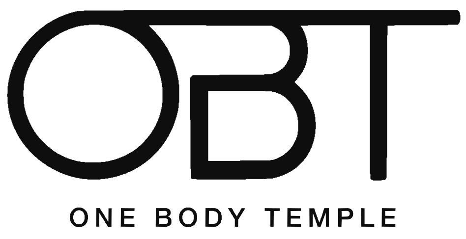

One Body Temple
Brand kit
Your body is a temple. Honor it through how you live.
The wordmark below is the live logo, traced from the existing artwork. Nothing here replaces it.
Primary
Wordmark
Ink on white
White on ink
When the name needs to be said
Stacked lockup

Wordmark, then the name. The name is a label, not part of the drawn mark.
Small sizes
The O
Use the ring alone at 16 px, in an avatar, or anywhere the full wordmark would collapse. It is the O measured from the logo, not a new symbol.
Symbol
App icon
Colour
Ink, bone, ember
The mark is one colour. Ember is the accent for rules and large type. It is not the default logo colour.
Type
Two jobs
Train like it means something.
One body temple
Headlines are Baskerville. Labels are Helvetica Neue, widely tracked. On the web, use Libre Baskerville and Inter. The wordmark is neither.
Space and size
Clear space
Leave one bar-height of the logo empty on every side. At minimum: wordmark 120 px / 32 mm wide. Stacked lockup 160 px / 40 mm. Symbol 16 px / 6 mm.
Do not
- Stretch it, rotate it, or add a shadow.
- Recolour it outside ink, white, and ember.
- Typeset the letters OBT and call that the logo.
- Split the letters apart, or put the symbol next to the wordmark.
Files
| Masters | brand-kit/masters |
|---|---|
| One-colour SVGs | brand-kit/digital |
| Web icons | brand-kit/web |
| Tests | brand-kit/preview/tests.html |
| In-use board | brand-kit/presentation/board.html |
| This page, in words | brand-kit/guidelines.md |
Questions: hello@obtapparel.com